{kind=link}
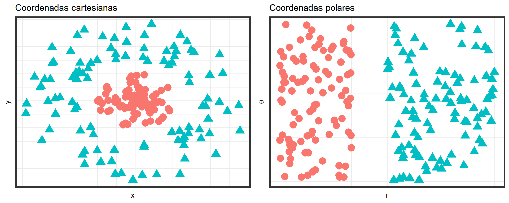
Deep Learning
Unidad 1: Fundamentos del Deep Learning
1 Introducción al Deep Learning y su evolución histórica.
1.1 Los inicios
La idea de crear máquinas pensantes se remontan a la antigua Grecia, inspirados en figuras míticas como Pigmalión, Dédalo y Hefesto.
Sus respectivas creaciones: Galatea, Talos y Pandora, han sido considerados como las primeras formas de vida artificial.
La posibilidad de inteligencia en máquinas fue contemplada mucho antes de la existencia de las computadoras programables (Lovelace 2015).
La inteligencia artificial (IA) hoy es un campo con aplicaciones prácticas extensas y una muy prolífica agenda de investigación.
La IA moderna busca automatizar tareas rutinarias, interpretar el habla e imágenes, apoyar diagnósticos médicos y fomentar la investigación científica.
Los primeros avances en IA resolvieron problemas complejos para humanos pero simples para computadoras, definidos por reglas matemáticas formales.
El gran reto de la IA es resolver tareas intuitivas humanas, como el reconocimiento de voz o de rostros, que son difíciles de expresar con reglas formales.
1.2 Algunos personajes históricos relevantes
Ada Lovelace (1815-1852)
Considerada la primera programadora de la historia por su trabajo en el algoritmo destinado a ser procesado por la máquina analítica de Charles Babbage. Lovelace anticipó la capacidad de las computadoras para ir más allá del simple cálculo numérico, sugiriendo que podrían crear arte y música si se les proporcionaban las instrucciones correctas.
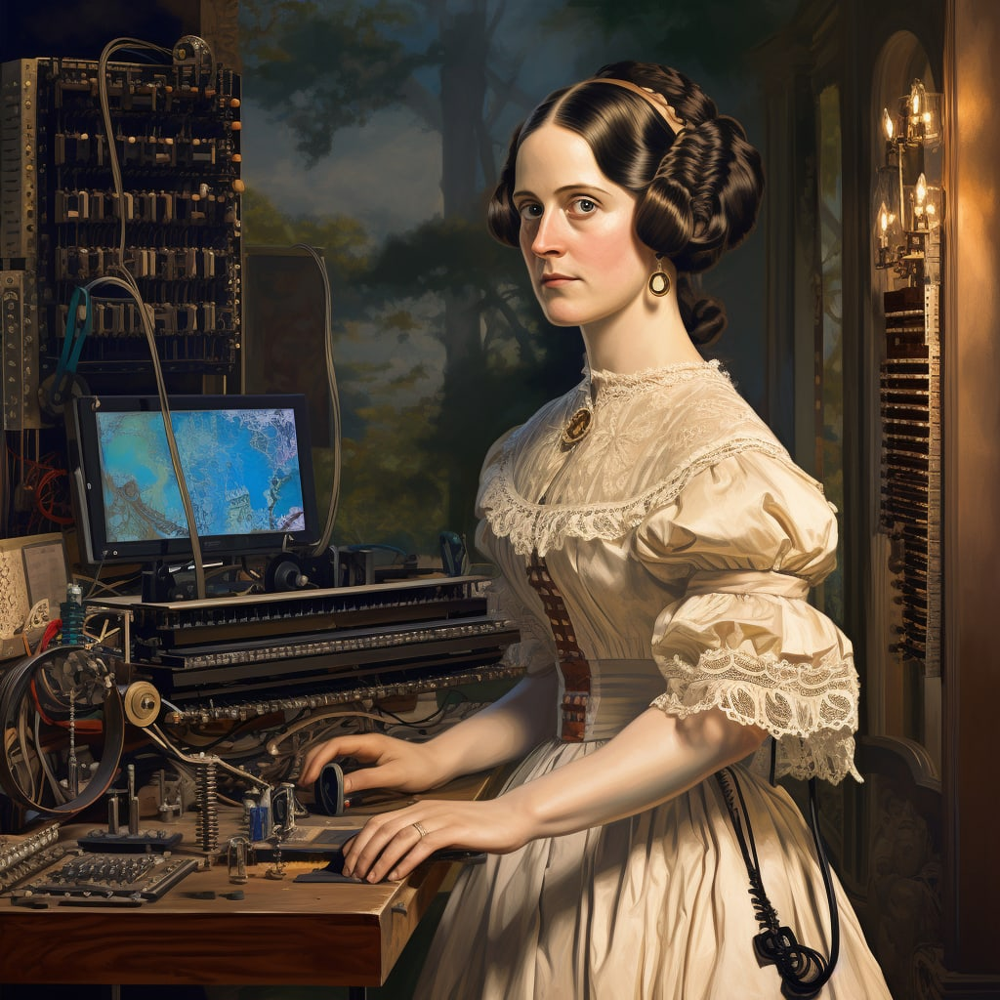
Acá algunos artículos que pueden ser de interés para profundizar en el tema:
Alan Turing (1912-1954)
Matemático y lógico británico, es uno de los padres de la informática y pionero en la inteligencia artificial. Desarrolló el concepto de la “máquina de Turing”, un dispositivo teórico que puede simular cualquier algoritmo. También es conocido por el “Test de Turing”, un criterio para evaluar la inteligencia de una máquina según su capacidad para exhibir un comportamiento indistinguible del de un humano.

Algunos artículos de interés:
Geoffrey Hinton
Psicólogo cognitivo y científico informático británico-canadiense, a menudo llamado “el padrino del deep learning”. Hinton ha sido una figura clave en el desarrollo de redes neuronales y algoritmos de aprendizaje profundo, contribuyendo al renacimiento del interés en la inteligencia artificial en el siglo XXI con sus avances en redes neuronales profundas.
Algunos artículos de interés:
Learning representations by back-propagating errors (Rumelhart, Hinton, y Williams 1986).
La extensa cantidad de artículos desarrollados por Hinton puede ser revisada en Google Scholar.
1.3 Contexto actual
Los primeros éxitos de la IA ocurrieron en entornos formales y simples, como el ajedrez; por ejemplo, Deep Blue de IBM venció a Garry Kasparov en 1997.
El ajedrez, aunque estratégicamente complejo para los humanos, es simple para las computadoras debido a sus reglas formales y bien definidas.
Las tareas abstractas y formales, difíciles para los humanos, suelen ser fáciles para las computadoras, como jugar al ajedrez a nivel de campeonato.
Garry Kasparov vs Deep Blue
Las habilidades humanas promedio para reconocer objetos o el habla han sido un desafío más significativo para la IA.
La vida cotidiana de una persona involucra conocimiento subjetivo e intuitivo sobre el mundo, difícil de codificar en reglas formales para las computadoras. Una gran dificultad en IA es la incorporación de este conocimiento informal en las computadoras.
Algunos proyectos de IA han intentado codificar conocimiento del mundo en lenguajes formales. Un computador puede ser entrenado para reaccionar automáticamente a sentencias establecidas en este lenguaje formal, conocido como línea base de conocimientos (knowledge base, en inglés), pero han tenido un éxito limitado.
Ejemplo:
Cyc, uno de los proyectos más conocidos (Lenat y Guha 1990), utiliza un motor de inferencia y una base de datos de afirmaciones en un lenguaje llamado CycL, pero ha enfrentado desafíos, como comprender historias simples del mundo real.
Los sistemas de IA necesitan poder adquirir su propio conocimiento extrayendo patrones de datos sin procesar. Esta habilidad se denomina aprendizaje automático (machine learning), que ha permitido a las computadoras manejar problemas complejos y tomar decisiones subjetivas.
Algunos ejemplos:
La regresión logística es un algoritmo de aprendizaje automático que puede recomendar partos por cesárea.
El algoritmo de clasificación de naive Bayes es capaz de distinguir entre correos electrónicos legítimos y spam.
Las Máquinas de Soporte Vectorial (SVM, del inglés Support Vector Machines), pueden ser útiles para la clasificación y regresión en datos de alta dimensión. Un ejemplo de aplicación es la clasificación de géneros de música o películas basada en las características del contenido como frecuencias de sonido, tipos de instrumentos, o palabras clave en las reseñas.
El rendimiento de los algoritmos de aprendizaje automático depende de la representación de los datos que se les proporciona
En el caso de la regresión logística aplicada a decisiones médicas, se confía en la información relevante proporcionada por el médico, no en un examen directo del paciente.
Cada pieza de información utilizada en la regresión logística se llama característica (o en inglés feature) y el algoritmo aprende la correlación de estas con los resultados.
La regresión logística no puede definir ni influir en cómo se definen las características y no es efectiva con datos no estructurados como los píxeles de una resonancia magnética.
Esta dependencia de las representaciones es un fenómeno general que es muy ocurrente dentro de la ciencia de computación, incluso en la vida diaria.
La elección de la representación de los datos tiene un efecto significativo en el desempeño de los algoritmos de machine learning.
Ejemplo
Muchas tareas relacionadas con inteligencia artificial pueden ser resueltas al diseñar el conjunto correcto de características (features) que deben ser extraídas para dicha tarea, y luego poder entregar estas características a algún algoritmo de machine learning.
- Ejemplo: Una característica útil a la hora de diseñar un modelo de identificación de quién habla a partir del sonido (hombre, mujer, o ñiño), es una estimación del tamaño del tracto vocal.
Para muchas tareas, se hace difícil el saber qué características deben ser extraídas.
- Ejemplo: necesitamos escribir un programa para detectar automóviles en imágenes. ¿Qué características interesantes podríamos extraer?.
Una solución para este problema es usar machine learning para descubrir no solo el mapeo de la representación a la salida (output), sino también la representación misma.
Este enfoque se conoce como aprendizaje de representación (representation learning).
Las representaciones aprendidas a menudo resultan en un rendimiento mucho mejor que el que se puede obtener con representaciones diseñadas manualmente.
Permiten a los sistemas de IA adaptarse rápidamente a nuevas tareas, con una mínima intervención humana.
Un algoritmo de aprendizaje de representación puede descubrir un buen conjunto de características para una tarea simple en minutos o para una tarea compleja en horas o meses.
Diseñar manualmente características para una tarea compleja requiere una gran cantidad de tiempo y esfuerzo humano; puede llevar décadas para toda una comunidad de investigadores.
Ejemplo:
Un ejemplo por excelencia de un algoritmo de aprendizaje de representación es el autoencoder. Un autoencoder es la combinación de:
una función de codificador, que convierte los datos de entrada en una representación diferente, y
una función de decodificador, que convierte la nueva representación de nuevo al formato original.
Los autoencoders están entrenados para preservar tanta información como sea posible cuando una entrada se ejecuta a través del codificador y luego del decodificador, pero también están entrenados para hacer que la nueva representación tenga varias propiedades deseables.
Diferentes tipos de autoencoders buscan lograr diferentes tipos de propiedades.
Al diseñar características o algoritmos para aprender características (feature engineering), nuestro objetivo generalmente es separar los factores de variación que explican los datos observados.
En este contexto, usamos la palabra
factoressimplemente para referirnos a fuentes separadas de influencia; los factores generalmente no se combinan por multiplicación.Los factores a menudo no son cantidades que se observan directamente, pueden existir como objetos no observados o fuerzas no observadas en el mundo físico que afectan cantidades observables.
Pueden existir como construcciones en la mente humana que proporcionan explicaciones simplificadoras útiles o causas inferidas de los datos observados.
Pueden considerarse como conceptos o abstracciones que nos ayudan a dar sentido a la rica variabilidad en los datos.
Ejemplo:
Al analizar una grabación de voz, los factores de variación incluyen la edad del hablante, su sexo, su acento y las palabras que está diciendo.
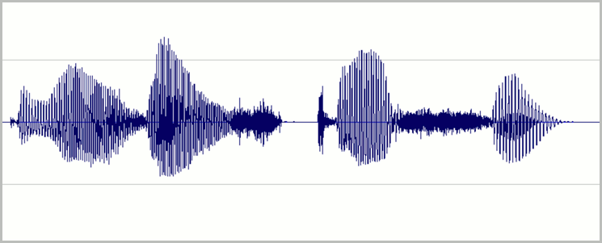
Ejemplo:
Al analizar una imagen de un automóvil, los factores de variación podrían incluir la posición del automóvil, su color y el ángulo y brillo del sol.
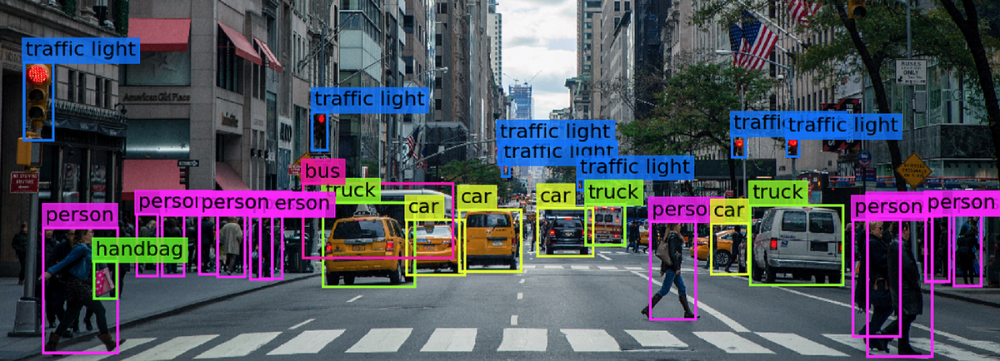
Una fuente importante de dificultad en muchas aplicaciones de inteligencia artificial del mundo real es que muchos de los factores de variación influyen en cada pieza de datos que podemos observar.
Los píxeles individuales en una imagen de un automóvil rojo podrían estar muy cerca del negro por la noche.
La forma de la silueta del automóvil depende del ángulo de visión.
La mayoría de las aplicaciones requieren que se analizen en profundidad (y desenredemos) los factores de variación y descartemos aquellos que no nos importan.
Puede ser muy difícil extraer tales características abstractas y de alto nivel de datos sin procesar.
Muchos de estos factores de variación, como el acento de un hablante, solo se pueden identificar utilizando una comprensión de los datos sofisticada y casi al nivel humano.
Cuando es casi tan difícil obtener una representación como resolver el problema original, el aprendizaje de representación no parece, a primera vista, ser de mucha ayuda.
1.4 Deep Learning
Definiciones
Rama del campo de la inteligencia artificial que se enfoca en el desarrollo y entrenamiento de modelos de redes neuronales artificiales de múltiples capas. Estos modelos tienen la capacidad de aprender y extraer representaciones de alto nivel a partir de datos brutos, lo que les permite abordar tareas complejas como el reconocimiento de imágenes, el procesamiento del lenguaje natural y la toma de decisiones
El Aprendizaje Profundo (Deep Learning) resuelve el problema central en el aprendizaje de representaciones introduciendo representaciones que se expresan en términos de otras representaciones más simples.
El aprendizaje profundo permite que el modelo construya conceptos complejos a partir de conceptos más simples.
Esquema de como un sistema de aprendizaje profundo puede representar el concepto de una imagen de una persona combinando conceptos más simples, como esquinas y contornos, que a su vez se definen en términos de bordes.
Ejemplo:
Uno de los modelos más utilizados en deep learning es la red profunda hacia adelante (deep feed forward network)o perceptrón multicapa (multilayer perceptron, MLP).
Un MLP puede ser visto como una función matemática que mapea un conjunto de valores de entrada a valores de salida.
La función se forma componiendo muchas funciones más simples. Podemos pensar en cada aplicación de una función matemática diferente como proporcionando una nueva representación de la entrada.
Las redes más profundas pueden ejecutar más instrucciones en secuencia, permitiendo referencias a resultados de cálculos previos.
No toda la información en las activaciones de una capa representa factores de variación; también almacena información de estado para ejecutar programas que procesan la entrada.
La profundidad de un modelo puede medirse por:
la cantidad de instrucciones secuenciales necesarias para evaluar la arquitectura, o
la longitud del camino más largo en un diagrama de flujo que describe el cálculo de las salidas.
La profundidad percibida de un modelo puede variar dependiendo del “lenguaje” o funciones que se elijan para representar la arquitectura en un diagrama de flujo.
Ejemplo: Regresión logística
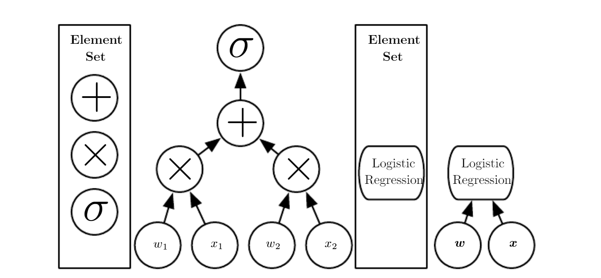
La profundidad de un modelo no tiene un valor único o correcto, ya que la percepción de la profundidad depende de la elección de los elementos básicos utilizados para construir los gráficos.
No hay consenso sobre cuánta profundidad se necesita para que un modelo sea considerado como “profundo”.
El aprendizaje profundo se puede considerar como el estudio de modelos que involucran una mayor cantidad de composición de funciones o conceptos aprendidos en comparación con el aprendizaje automático tradicional.
El aprendizaje profundo es una técnica de aprendizaje automático que permite a los sistemas informáticos mejorar con la experiencia y los datos.
Se sostiene que el aprendizaje automático es el único enfoque viable para construir sistemas de IA que puedan operar en entornos del mundo real complicados.
Entonces…
Los modelos de Deep Learning pueden ser vistos como un tipo particular de Machine Learning, más potente y flexible al poder representar los distintos problemas que se analizan a través de una jerarquía anidada de conceptos, con cada concepto definido en relación a conceptos más simples, y así sucesivamente.
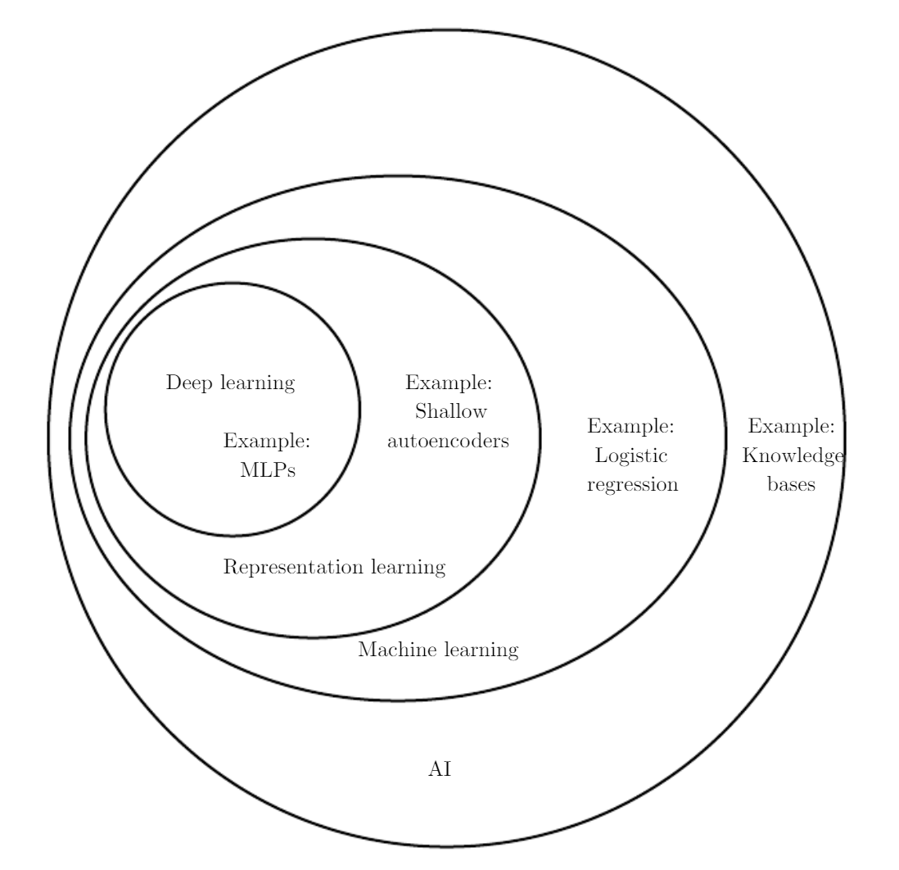
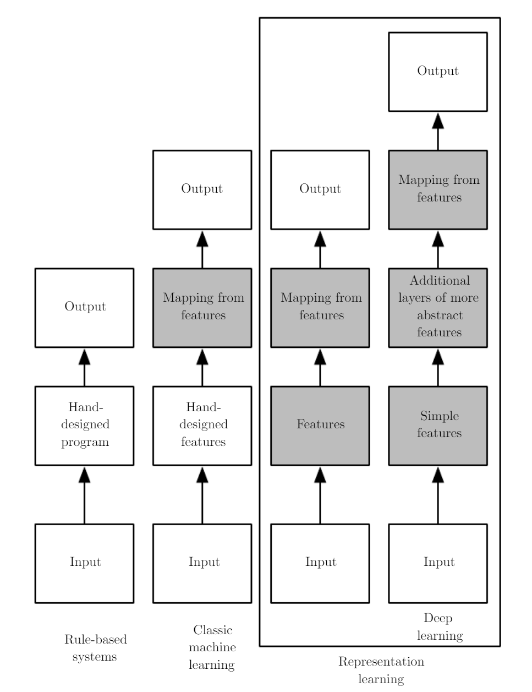
1.5 Contexto histórico
Algunos conceptos claves en la historia de la evolución del Deep Learning
Ha tenido muchos nombres a lo largo de la historia, a partir de diferentes puntos de vista filosóficos. Esto tambien ha hecho que su popularidad haya presentado variaciones.
Se ha vuelto más útil a medida que ha aumentado la cantidad de datos de entrenamiento disponibles.
Los modelos han crecido en tamaño a lo largo del tiempo a medida que la infraestructura informática (tanto hardware como software) para el aprendizaje profundo ha mejorado.
Ha resuelto aplicaciones cada vez más complicadas con una precisión creciente con el tiempo.
Redes Neuronales y sus múltiples nombres
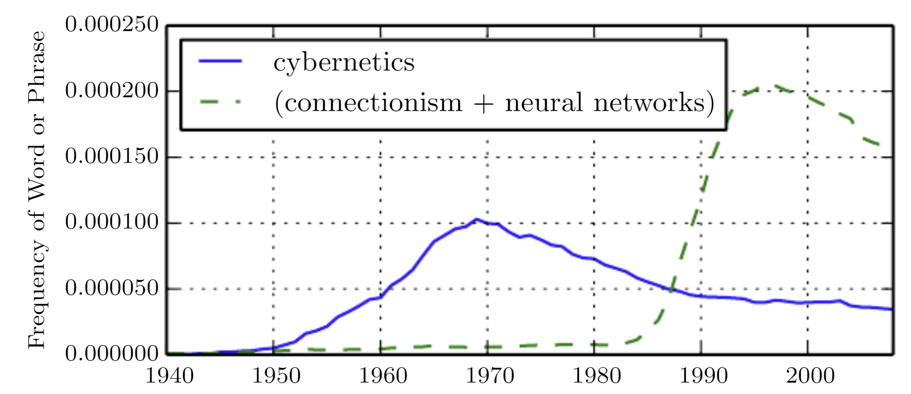
Los primeros predecesores de lo que conocemos hoy como Deep Learning fueron modelos mucho más simples, motivados desde una perspectiva neurocientífica.
Estos modelos fueron diseñados para tomar un set de valores de entrada (inputs) \(x_1, \ldots, x_n\) y luego asociarlos con un valor de salida (output) \(y\). Estos modelos podrían aprender un set de pesos (weights) \(w_1, \ldots, w_n\) y computar el valor de salida \(f(\mathbf{x}, \mathbf{y} ) = x_1 w_1, \ldots, x_n w_n\).
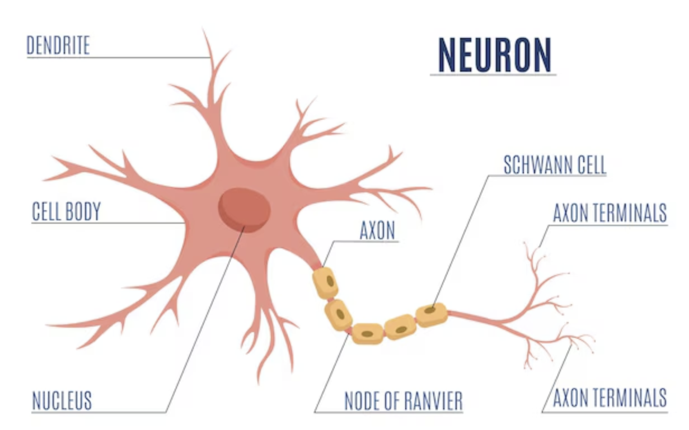
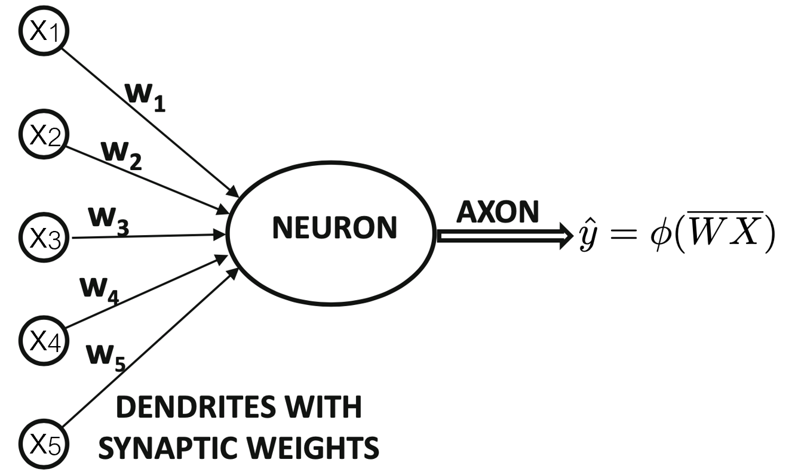
1958, Frank Rosenblatt creó el perceptrón.
1962, primer algoritmo de entrenamiento para el perceptrón: \(\mbox{Cambio de Peso} = (\mbox{Valor de línea de Peso Previo})\frac{\mbox{Error}}{\mbox{Número de Entradas}}\)
Alrededor de la misma época, un artículo afirmó que no podría ser una extensión de la red neuronal de una sola capa a una red neuronal de múltiples capas.
La primera red multicapa se desarrolló en 1975, siendo una red no supervisada.
Entre 1980-1986 se crearon arquitecturas de múltiples capas, el problema principal era la falta de un algoritmo de entrenamiento.
1986, tres grupos independientes de investigadores, incluyendo a Rumelhart y otros, propusieron el algoritmo de retropropagación.
1989: Las redes multicapa feedforward son aproximaciones universales.
1986-2005 se encontraron varios retos computacionales, de estabilidad y de sobreajuste en el uso de este algoritmo.
2006, Hinton, Salakhutdinov, Osindero y Teh demostraron que las redes neuronales feedforward de múltiples capas podían preentrenarse eficazmente una capa a la vez, comenzando la era del aprendizaje profundo.
2009 las redes neuronales de aprendizaje profundo fueron entrenadas con unidades de procesamiento gráfico (GPU) de Nvidia.
Desde entonces, múltiples arquitecturas han sido reconsideradas y creadas resolviendo problemas específicos.
Profundizando un poco en la historia
Para más detalles, se puede revisar el libro de Deep Learning (ver Goodfellow, Bengio, y Courville 2016, 12-26).
Hay muchos recursos en internet para encontrar información histórica asociada a Deep Learning, por ejemplo:
Crecimiento de datasets
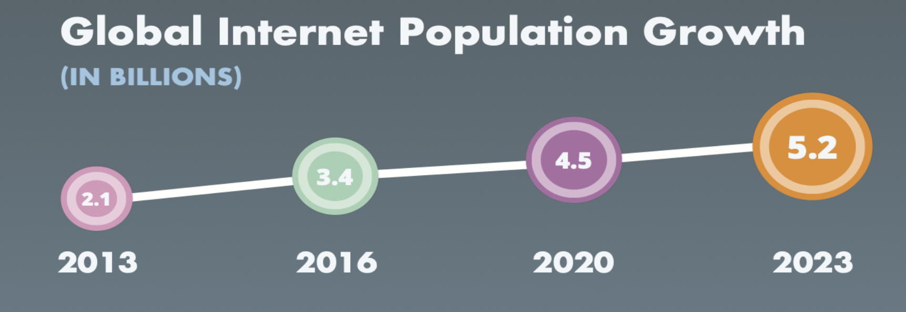Infografía Data never sleeps de Domo
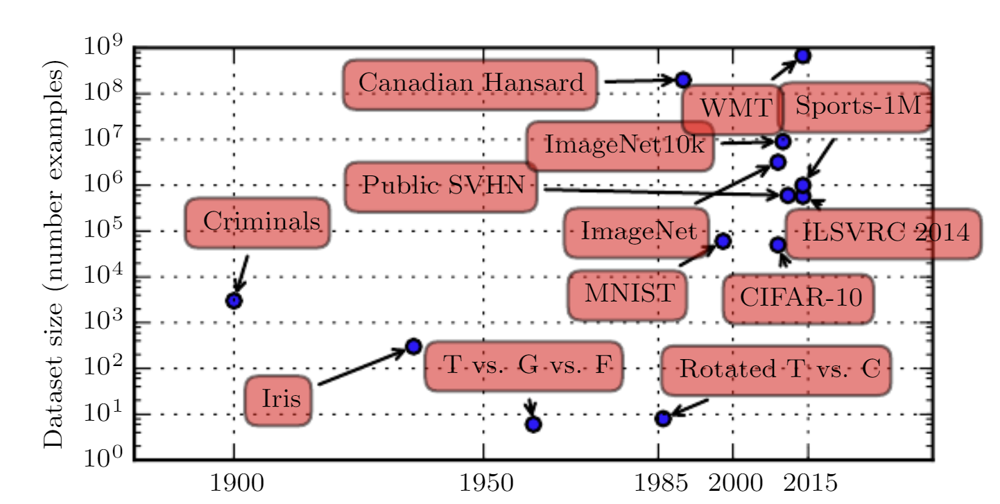
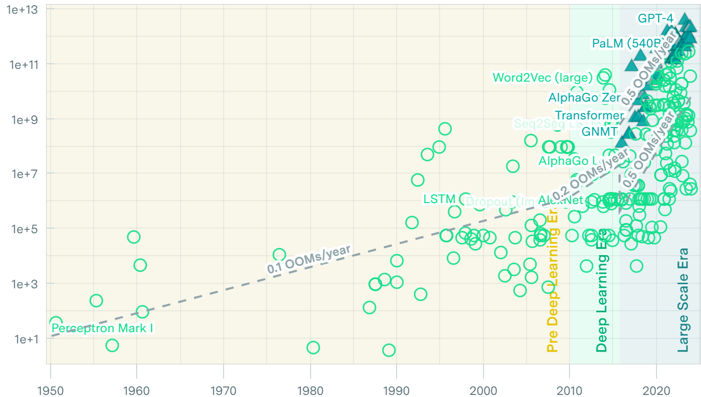
Modelos más complejos
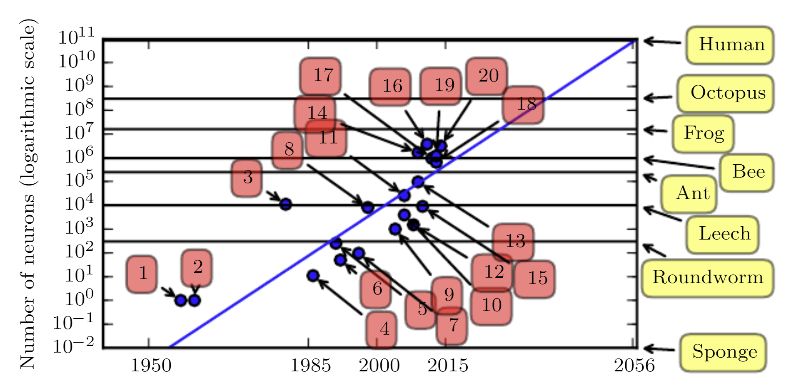Número de neuronas asociado a la complejidad de los modelos de DL (Goodfellow, Bengio, y Courville 2016).
- Perceptron (Rosenblatt, 1958, 1962)
- Adaptive linear element (Widrow and Hoff, 1960)
- Neocognitron (Fukushima, 1980)
- Early back-propagation network (Rumelhart et al., 1986b)
- Recurrent neural network for speech recognition (Robinson and Fallside, 1991)
- Multilayer perceptron for speech recognition (Bengio et al., 1991)
- Mean field sigmoid belief network (Saul et al., 1996)
- LeNet-5 (LeCun et al., 1998b)
- Echo state network (Jaeger and Haas, 2004)
- Deep belief network (Hinton et al., 2006)
- GPU-accelerated convolutional network (Chellapilla et al., 2006)
- Deep Boltzmann machine (Salakhutdinov and Hinton, 2009a)
- GPU-accelerated deep belief network (Raina et al., 2009)
- Unsupervised convolutional network (Jarrett et al., 2009)
- GPU-accelerated multilayer perceptron (Ciresan et al., 2010)
- OMP-1 network (Coates and Ng, 2011)
- Distributed autoencoder (Le et al., 2012)
- Multi-GPU convolutional network (Krizhevsky et al., 2012)
- COTS HPC unsupervised convolutional network (Coates et al., 2013)
- GoogLeNet (Szegedy et al., 2014a)
Crecimiento en el desempeño de los modelos
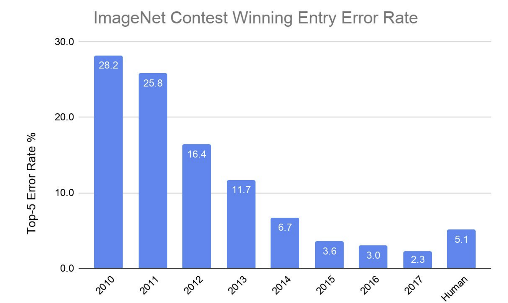Resultados del error obtenido por los ganadores de la competencia de clasificación ImageNet, figura extraída de Dean (2019).
2 Referencias
Aiello, Luigia Carlucci. 2016. «The multifaceted impact of Ada Lovelace in the digital age». Artificial Intelligence 235: 58-62.
Dean, Jeffrey. 2019. «The Deep Learning Revolution and Its Implications for Computer Architecture and Chip Design». https://arxiv.org/abs/1911.05289.
Editorial, Nature. 2023. «Ada Lovelace, a role model for the ages». Nature Computational Science 3 (10): 807-7. https://doi.org/10.1038/s43588-023-00541-z.
Epoch. 2022. «Parameter, Compute and Data Trends in Machine Learning». https://epochai.org/data/epochdb/visualization.
French, Robert M. 2000. «The Turing Test: the first 50 years». Trends in Cognitive Sciences 4 (3): 115-22. https://doi.org/10.1016/S1364-6613(00)01453-4.
Goodfellow, Ian, Yoshua Bengio, y Aaron Courville. 2016. Deep learning. MIT press.
Hinton, Geoffrey E. 1992. «How Neural Networks Learn from Experience». Scientific American 267 (3): 144-51. https://www.jstor.org/stable/24939221.
Jaeger, Lars. 2023. «Ada Lovelace (1815–1852): Inventor of Computer Algorithms». En Women of Genius in Science: Whose Frequently Overlooked Contributions Changed the World, 71-82. Springer.
LeCun, Yann, Yoshua Bengio, y Geoffrey Hinton. 2015. «Deep learning». Nature 521 (7553): 436-44. https://doi.org/10.1038/nature14539.
Lenat, Douglas, y RV Guha. 1990. Building Large Knowledge-Based Systems, Representation and Inference in the Cyc Project. Addison-Wesley.
Lovelace, AA. 2015. «1842 Notes to the Translation of the Sketch of the Analytical Engine». Ada User Journal 36 (3): 152.
Moor, James H. 1976. «An Analysis of the Turing Test». Philosophical Studies: An International Journal for Philosophy in the Analytic Tradition 30 (4): 249-57. https://www.jstor.org/stable/4319091.
———. 2001. «The Status and Future of the Turing Test». Minds and Machines 11 (1): 77-93. https://doi.org/10.1023/A:1011218925467.
Pinar Saygin, Ayse, Ilyas Cicekli, y Varol Akman. 2000. «Turing Test: 50 Years Later». Minds and Machines 10 (4): 463-518. https://doi.org/10.1023/A:1011288000451.
Rumelhart, David E., Geoffrey E. Hinton, y Ronald J. Williams. 1986. «Learning representations by back-propagating errors». Nature 323 (6088): 533-36. https://doi.org/10.1038/323533a0.

Imagen generada desde DALL-E con los conceptos de esta diapositiva